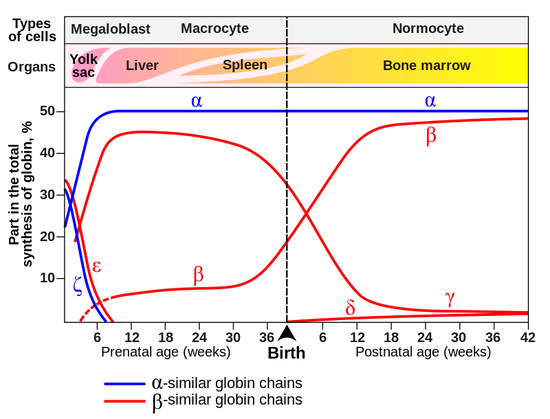

BIO504 - La famille des hémoglobines
Introduction à la famille des hémoglobines humaines
1 Présentation
L’hémoglobine est une protéine multimérique constituée de 4 monomères de globulines et de 4 hèmes agissant comme transporteur d’oxygène
Chez l’humain, plusieurs formes de la protéine se succèdent pendant le développement de l’embryon, du fœtus et de l’adulte. Elles sont constituées de différentes chaînes d’acides aminés :
- Zeta (\(\zeta\)) apparaît en premier, suivie par epsilon (\(\epsilon\)) pendant la vie embryonnaire
- Ensuite les chaînes gamma (\(\gamma\)) 1 et 2 deviennent majoritaires chez le fœtus
- Six mois après la naissance, les chaînes alpha (\(\alpha\)) and beta (\(\beta\)) sont alors prédominantes pendant que delta reste très minoritaire.
|
 |
Fig 1. Expression des gènes des globines avant et après la naissance Diagramme montrant l'expression des gènes des hémoglobines avant et après la naissance. Il montre aussi les types de cellules et les organes dans lesquels les expressions des gènes sont mesurées (d'après Wood WG Br. Med. Bull. 32, p282, 1976.) |
L’hémoglobine dans le sang transporte l’oxygène des organes respiratoires vers le reste du corps. L’oxygène ainsi libéré est utilisé pour la respiration aérobie ce qui conduit à la production d’énergie par le métabolisme.
2 Organisation
Les variants de l’hémoglobine font partie du développement normal de l’embryon et du fœtus, mais peuvent également conduire à des formes mutantes dans certaines populations causées par des variations génétiques. Certaines formes variantes identifiées sont responsables de maladies bien connues comme l’anémie falciforme, aussi appelées hémoglobinopathies. D’autres variants ne causent aucune pathologie décelable, et sont considérés comme des variants non-pathogènes.
| Forme normale | Types de chaînes | Effet produit |
|---|---|---|
| Dans l’embryon: | ||
| Hb Gower 1 | ζ2ε2 | |
| Hb Gower 2 | α2ε2 | |
| Hb Portland I | ζ2γ2 | |
| Hb Portland II | ζ2β2 | |
| Dans le fœtus: | ||
| Hb F | α2γ2 | |
| Après la naissance: | ||
| Hb A | α2β2 | La plus courante avec un taux de 95% |
| Hb A2 | α2δ2 |
La synthèse de la chaîne δ débute en fin de 3e semestre. Chez l’adulte, son taux varie entre 1,5 et 3,5% |
| Forme variante pathogène | Type de chaîne | Mutations et maladies |
|---|---|---|
| Hb F | α2γ2 | Cette forme entraîne l’anémie falciforme et les β-thalassémies) |
| Hb D-Punjab | α2βD2 | Forme variante de l’hémoglobine |
| Hb H | β4 | Formée par un tétramère de chaînes β |
| Hb Barts | γ4 | (certaines thalassémies α) |
| Hb S | α2βS2 | Forme variante de l’anémie falciforme. Mutation de la chaîne β, changement de propriétés |
| Hb C | α2βC2 | Mutation dans le gène de la chaîne β |
| Hb E | α2βE2 | (anémie hémolytique chronique) |
| Hb AS | Hétérozygote entre une forme adulte A et une forme anémique | |
| Hb SC | Hétérozygote entre une forme C et une forme anémique |